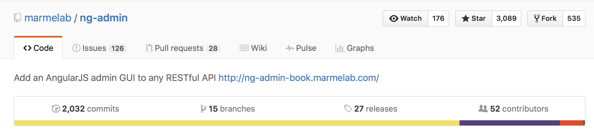

Introducing:
aiohttp_admin
Nikolay Novik
KyivPy 18
I am ...
- Software Engineer: at DataRobot Ukraine
- Github: https://github.com/jettify
- Twitter: https://twitter.com/isinf
- My Projects:
- database clients:
aiomysql, aioobc, aiogibson - web and etc:
aiohttp_debugtoolbar, aiobotocore, aiohttp_mako, aiohttp_admin
- database clients:
What framework do you use?


Motivation. Why we might want to have "automatic" admin interface?
- For small web applications or micro service, where custom admin interface is overkill
- To give a manager something to play with while proper admin interface is not ready
- Could be solution if you hate to write a lot of
js/htmlbut have to
Existing admin libraries
-
Pyramid
- https://github.com/Javex/pyramid_crud
- https://github.com/appetito/pyramid_admin
- https://github.com/tarzanjw/pyramid_admin2 Flask
- https://github.com/flask-admin/flask-admin/
- https://github.com/jeanphix/Flask-Dashed
- https://github.com/syrusakbary/flask-superadmin/ Bottle
- https://github.com/avelino/bottle-admin Django
- https://github.com/django/django
Review Django Admin
- Battle tested
- Large number of extensions that sometimes work
- Huge community
- Auth out of the box
- Tightly coupled with Django
- Supports only RDBMS through Django ORM
Review Flask-Admin
- DB and ORM agnostic (supports SQLA, Peewee, MongoEngine, pymongo etc.)
- Somewhat easy to extend, there is nice interface for that
- Large community, admin used in several other opens source projects
- Relies to much on WTForms, forces you sometimes to mix js with python
aiohttp_admin requirements
How modern admin view should look like?- Should be SPA (No WTForms sh*t)
- Should be DB/ORM agnostic
- Should use
asyncio/aiohttp - Should be pluggable and extensible
aiohttp_admin overview
Demo
aiohttp_admin architecture

Supported Databases


Python Application Dependencies
aiohttp trafaret
{aiomysql aiopg sqlalchemy motor}
ng-admin is frontend for aiohttp_admin
- ng-admin could be plugged to your RESTFul API to get a complete administration interface (datagrid, filters, multi-model relationships, dashboard) in no time.
- Beyond simple CRUD, ng-admin lets you build sophisticated GUIs without getting in your way.

aiohttp_admin setup: step 1
Suppose we have two tables:question and
choice from polls aiohttp demo.
import asyncio
import sqlalchemy as sa
meta = sa.MetaData()
question = sa.Table(
'question', meta,
sa.Column('id', sa.Integer, nullable=False),
sa.Column('question_text', sa.String(200), nullable=False),
sa.Column('pub_date', sa.Date, nullable=False))
choice = sa.Table(
'choice', meta,
sa.Column('id', sa.Integer, nullable=False),
sa.Column('question_id', sa.Integer, nullable=False),
sa.Column('choice_text', sa.String(200), nullable=False),
sa.Column('votes', sa.Integer, server_default="0", nullable=False))
aiohttp_admin setup: step 2
Create admin extension and then register each table we want to have admin views
def setup_admin(app, pg, admin_config_path):
admin = aiohttp_admin.setup(app, admin_config_path)
admin.add_resource(PGResource(pg, db.question, url='question'))
admin.add_resource(PGResource(pg, db.choice, url='choice'))
return admin
async def init(loop):
# ...
app = web.Application(loop=loop)
# ...
admin_config = str(PROJ_ROOT / 'static' / 'js')
setup_admin(app, pg, admin_config)
Example of REST routes
On background REST routes created for each registered entity
GET /admin/question
GET /admin/question/{entity_id}
POST /admin/question
PUT /admin/question/{entity_id}
DELETE /admin/question/{entity_id}
GET /admin/choice
GET /admin/choice/{entity_id}
POST /admin/choice
PUT /admin/choice/{entity_id}
DELETE /admin/choice/{entity_id}
aiohttp_admin setup: step 3
Create declare list view for entityconfig.js
var question = nga.entity('question');
admin.addEntity(question)
question.listView()
.title('All questions')
.description('List of question with infinite pagination')
.infinitePagination(true)
.fields([
nga.field('id').label('id'),
nga.field('question_text'),
nga.field('pub_date', 'date'),
])
.filters([
nga.field('pub_date', 'date')
.label('Posted')
.attributes({'placeholder': 'Filter by date'}),
])
.listActions(['show', 'edit', 'delete']);
aiohttp_admin setup: step 4
Declare create and delete views for entity inconfig.js
question.creationView()
.fields([
nga.field('question_text', 'wysiwyg'),
nga.field('pub_date', 'date')
]);
question.deletionView()
.title('Deletion confirmation');
aiohttp_admin setup: step 4
Declare edit views for entity inconfig.js
question.editionView()
.title('Edit question')
.actions(['list', 'show', 'delete'])
.fields([
nga.field('id')
.editable(false)
.label('id'),
question.creationView().fields(),
nga.field('choice', 'referenced_list')
.targetEntity(nga.entity('choice'))
.targetReferenceField('question_id')
.targetFields([
nga.field('id').isDetailLink(true),
nga.field('votes').label('Votes'),
nga.field('choice_text').label('Choise')
])
.sortField('votes')
.sortDir('DESC')
.listActions(['edit']),
]);
Open Issues1: Authentication and permission control
- Could be solved by introducing
jwttoken interface. It is users responsibility to implement token route and user management, since admin extension does not know anything about user - Just use basic authentication, any additional features are users headache
Open Issues2: automatic code generation
- In simplest case
jinja2templates could be used for initial code generation. As alternative configuration could be generated dynamically usingjsorpython - Add
jslogic to generate admin configuration based on exposed metadata using REST API - Add
pythonlogic to generate admin configuraion on the fly, using familiar django syntax